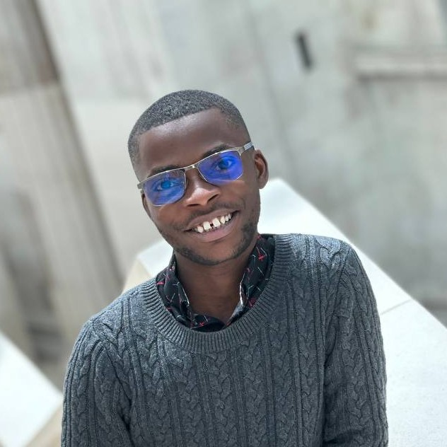
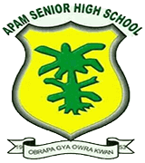
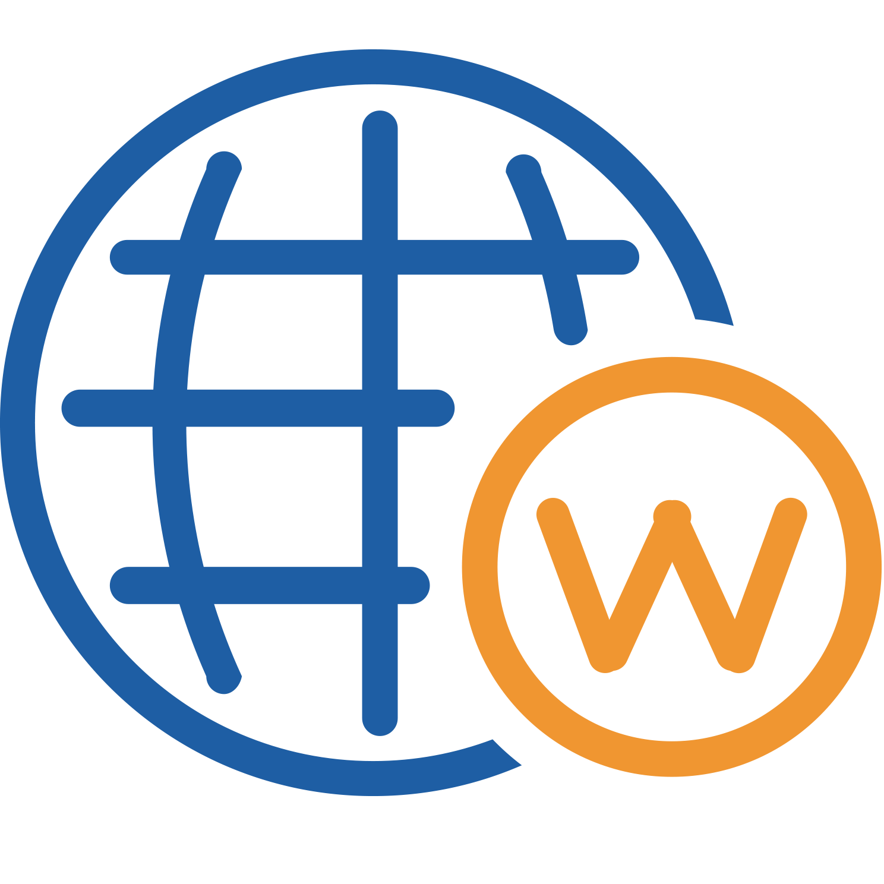
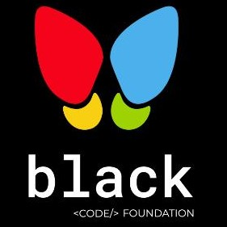

Kwame Nkrumah University of Science and Technology (KNUST)
Stephen Asiedu Maranatha

- Co-founder of Black Code Foundation
- Research and Teaching Assistant @KNUST
- Thesis Assistant @Werld_Analytics
- Computer Vision Enthusiast
Our entire Universe is reducible to Mathematics. Innovation is defined on this.
About
My name is Stephen Maranatha Asiedu. I hail from Ghana in West Africa. I am young Mathematician with a Bachelors Degree in Mathematics from the Kwame Nkrumah University of Science and Technology. I am an enthusiast of technology and an advocate for its education especially in underrepresented parts of the world like Africa. I am a Researcher looking into Computer Vision and how best this field can be hosted to help reduce human inaccuracies.
Interests
- Mathematics
- AI/ML Research (Computer Vision)
- AI for Social good
- Computer Literacy for young Africans
NEWS
My Research Abstract was accepted to be presented at the 2022 Ghana Data Science
Summit (IndabaX) in Accra Ghana.
Poster Title:
Optimizing Time Spent in Road Traffic Via the Use of Smart Traffic Lights.Read more on IndabaX Ghana's papers webpage
I was awarded the Google Travel Grant at IndabaX Ghana - Ghana Data Science Summit 2022
This was during an event held at Academic City University College in Accra, Ghana.
My Team won the Best in Show at the CodeDay event organised at KNUST.
Project:
Built a simple shooting game over 24 hours.Read about CodeDay
Education

September 2018 - August 2022
Kumasi, Ghana, West Africa.
Awarded: Bachelors Degree, Mathematics [First Class Honors]
Skills: Differential & Integral Equations, Optimization, Scientific Computing, Algebra, Topology, etc.

Apam Senior High School (Apass)
March 2013 - May, 2016
Apam, Central Region, Ghana, West Africa.
Awarded: West Africa Senior Secondary Certification Examination (WASSCE)
Courses: Elective & Core Mathematics, Integrated Science, Social Studies, Biology, Physics, Chemistry
Work Experience
Research and Teaching Assistant
National Institute for Mathematical Sciences, Ghana.
November 2022 - present
KNUST, Kumasi, Ghana.
Achievement: Assisting in the Research of Data Modeling, Database Management and Robotics.
Skills: Data Modeling and Database Management, PostgreSQL, Drupal, Scientific Computing, Python
Teaching Assistant (National Service)
Kwame Nkrumah University of Science and Technology (KNUST)
November 2022 - present
Kumasi, Ghana, West Africa.
Achievement: Teaching Assistant for Differential Equations for Undergraduate
Skills: LaTex, Teaching, Machine Learning, etc

Website Developer, Research Assistant & Designer
Werld Analytics
October 2021 - present
Kumasi, Ghana, West Africa.
Achievement: Developed stunning Websites for companies and assisted in the documentation of reserches by clients
Skills: Data Analysis, Python, R, HTML, CSS, JavaScript, Django, LaTex, etc.

Co-founder & Outreach Programs Lead
Black Code Foundation
November 2021 - present
Ghana, West Africa.
Achievement: Teaching the underrepresented in Technology to be major contributors through voluntry training and mentoring
Skills: Robotics (Arduino), UI/UX Design, Photography, etc.
Leadership
Member of the Advisory Board for YEC
Ghana Library Authority, Youth Engagement Center (YEC)
June 2022 - present
Ashanti Region, Ghana
Roles:
Responsible for the planning and management of programs funded by the Ghana
Library Authority and UNICEF for the active participation and greather good of
the youth